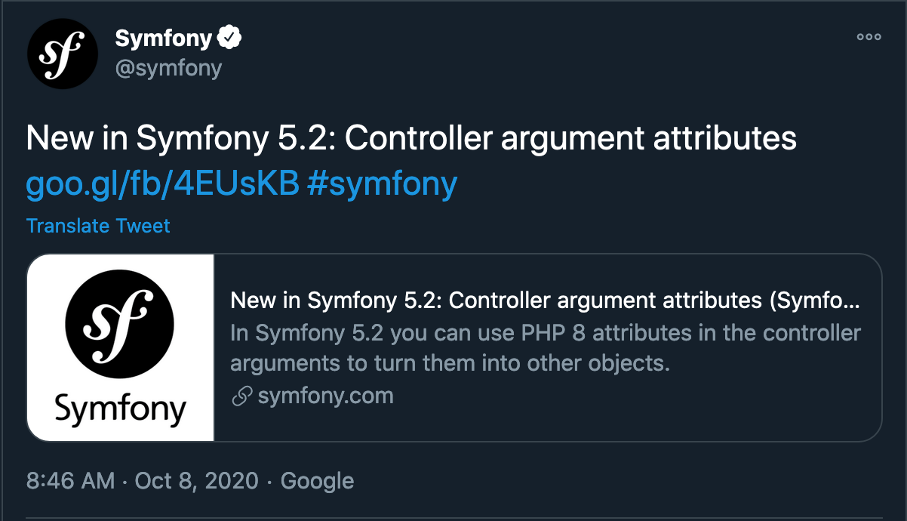

Dive in the dependency injection container

 - Dive in the dependency injection container
- Dive in the dependency injection container

Stéphane Hulard
Consultant, Trainer, Contributor.
A pattern ?
Why ?
How ?
A basic version
class Engine
{
public function __construct(string $name)
{
$this->name = $name;
}
}
A basic version
class Car
{
public function __construct()
{
$this->engine = new Engine('v8');
}
}
class Car
{
public function __construct(Engine $engine)
{
$this->engine = $engine;
}
}
A basic version
$container = [
'engine' => static function (): Engine {
return new Engine('standard');
},
'v8' => new Engine('v8')
];
A basic version
$container['car'] = function () use ($container): Car {
return new Car($container['engine']);
};
//Invoking the function will return a valid Car
$myCar = $container['car']();
In Symfony
#services.yaml
engine:
class: Engine
attributes:
$name: 'standard'
v8:
class: Engine
attributes:
$name: 'v8'
car:
class: Car
attributes:
$engine: '@v8'
Interest ?
Decoupling, Role, Architecture.
In the PHP ecosystem
In the frameworks
/* Laravel */
class Car extends ServiceProvider
{
public function register()
{
$this->app->bind('engine', function (): Engine {
return new Engine('standard');
});
$this->app->bind('v8', new Engine('v8'));
$this->app->bind('car', function (Application $app): Engine {
return new Car($app->make('v8'));
});
}
}
/* Laravel */
class Car extends ServiceProvider
{
public function register()
{
$this->app->bind('engine', function (): Engine {
return new Engine('standard');
});
$this->app->bind('v8', new Engine('v8'));
$this->app->bind('car', function (Application $app): Engine {
return new Car($app->make('v8'));
});
}
}
/* Lamina service manager */
$serviceManager = new Laminas\ServiceManager\ServiceManager([
'invokable' => [
'v8' => new Engine('v8')
],
'factories' => [
'engine' => function(ContainerInterface $container, $requestedName) {
return new Engine('standard');
},
'car' => function(ContainerInterface $container, $requestedName) {
return new Car($container->get('v8'));
},
],
]);
$maCar = $serviceManager->get('car');
/* Lamina service manager */
$serviceManager = new Laminas\ServiceManager\ServiceManager([
'invokable' => [
'v8' => new Engine('v8')
],
'factories' => [
'engine' => function(ContainerInterface $container, $requestedName) {
return new Engine('standard');
},
'car' => function(ContainerInterface $container, $requestedName) {
return new Car($container->get('v8'));
},
],
]);
$maCar = $serviceManager->get('car');
Independent solutions
$container = new Pimple\Container();
$container['engine'] = function (): Engine {
return new Engine('standard');
};
$container['v8'] = new Engine('v8');
$container['car'] = $container->factory(
function(Pimple\Container $c) {
new Car($c['v8']);
}
);
$maCar = $container['car'];
$container = new DI\Container();
$container->set('engine', function (): Engine {
return new Engine('standard');
});
$container->set('v8', new Engine('v8'));
$container->(
'car',
DI\factory(function (ContainerInterface $c): Car {
new Car($c->get('v8'));
}
);
$maCar = $container->make('car');
PSR11 and normalisation
PSR11An interface to rule them all
namespace Psr\Container;
interface ContainerInterface
{
public function get($id);
public function has($id);
}
Is it really useful ?
IDD Interface Driven Development 🤩
interface Engine {
public function start(): bool;
}
interface Car {
public function goTo(Destination $destination): bool;
}
IDD Interface Driven Development 🤩
class EngineV8 implements Engine
{
public function start() {
$this->makeNoise();
}
}
IDD Interface Driven Development 🤩
$container['v8'] = new EngineV8();
$container['car'] = function () use ($container): Car {
return new Car($container['engine']);
};
$maCar = $container['car']();
Why using it ?
The hidden capabilities of your application?
class CustomQueryPass implements CompilerPassInterface
{
public function process(ContainerBuilder $container)
{
$container
->getDefinition(UploadExam::class)
->setArgument(
'$files',
$container->getDefinition('app.filesystem.tmp_dicom')
);
}
}
Latest Symfony news ?
Latest Symfony news ?
use App\Entity\MyUser;
use Symfony\Bundle\FrameworkBundle\Controller\AbstractController;
use Symfony\Component\Security\Http\Attribute\CurrentUser;
class SomeController extends AbstractController
{
public function index(#[CurrentUser] MyUser $user)
{
// ...
}
}
Convention or mastering tools?
Ease, Documentation.